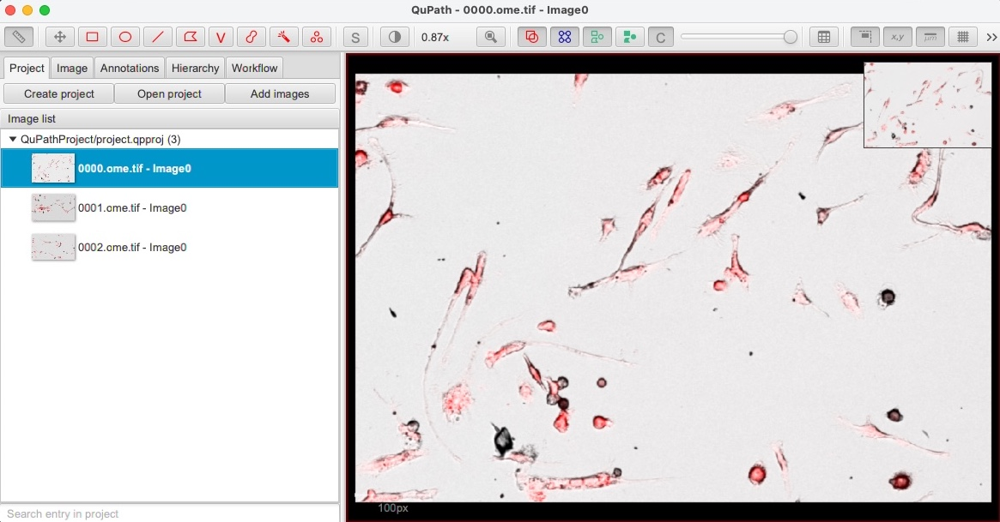
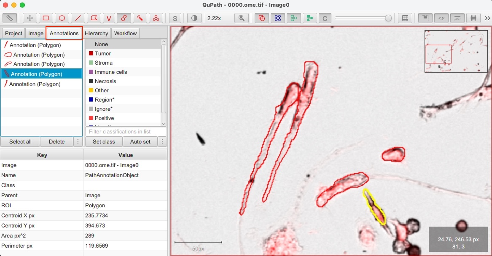
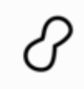
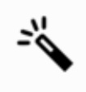

{kind=link}
Annotating in QuPath¶
Getting started¶
{kind=link}
Starting QuPath¶

Option 1: Start QuPath directly from the traincellpose tool:
Once you have selected the regions of interest using Napari (see Select Regions of Interest), simply choose
QuPathas annotation tool in the starting window of thetraincellposestarting window and then click onAnnotate ROIsAfter QuPath starts, on the left panel you should see the regions of interest you selected: double-click on one image to open it in the viewer
Option 2: Lauch QuPath manually and then load the QuPath annotation project:
In the
traincellposeproject folder, you find a folder namedQuPathProject. To open this folder (and compress it to azipfile) you can click on theExport QuPath Projectbutton.To load the regions of interest in QuPath, you simply have to drag this folder into QuPath. Alternatively, after starting QuPath you can click on the Menu item
File/Projects.../Open Projectand open theproject.qpprojfile in theQuPathProjectfolder.On the left panel you should see the regions of interest you selected: double-click on one image to open it in the viewer
{kind=link}
Adjusting image channels contrast¶
For making the annotation process easier, it may be helpful to adjust the contrast of the image channels. To do so, first load one image and then select the View/Brightness-Contrast menu item (or press the Shift+C keys).
From this window, you can select image channels and see the pixel-intensity distribution, adjust the Min display and Max display sliders to adjust the contrast, or changing the colormap of the single image channels.
{kind=link}
Viewing image channels one by one¶
If you open the Channel Viewer from the Menu View/Mini viewers.../Show channel viewer, you will be able to see each channel of the image singularly.
This can be very handy when manually annotating.
Annotating cells in QuPath¶
When you start annotating cells, you create Annotation objects. The list of the annotated cells can be seen by clicking on the Annotations tab (see image below). You can easily select/delete/merge cell annotations by selecting items in the Annotations list.
Important
Remember that you should label all cells inside a region of interest! And when you are done annotating, do not forget to save your results (<Ctrl+S> keyboard shortcut).
You can find the drawing tools in the top-toolbar of QuPath. For annotating cells, you will only need the following tools: Move, Brush, and Wand.
{kind=link}
Panning and zooming (shortcut: M)¶
{kind=link}
Select the Move tool, then click on the image and drag to move it.
If another tool is currently selected, press Spacebar to temporarily activate the Move tool. Releasing the Spacebar returns to the previously selected tool.
Alternatively, to move quickly to a specific region simply click on the area you wish to navigate to in the overview shown in the top right corner.
Use the scroll wheel to zoom in and out (it also works on trackpad). With the touch-screen, you can also use ‘pinch-to-zoom’.
The location of the cursor determines where will be centered whenever zooming - so it is a good idea to put the cursor on top of the area that you would like to zoom to.
 Brush tool (shortcut: B)¶
{kind=link}
The Brush tool is probably the drawing tool you will use the most for annotating cells. The idea is simple: each click of the brush selects a small circle, but by dragging the mouse across the image then a region is ‘painted’ that way.
This would have limited call for excitement, but the Brush tool within QuPath has a few particularly useful features:
Annotating a new cell: Simply start drawing in another area of the image and this will automatically create a new annotation object.
Updating the annotation of a cell: Start using the brush inside an existing annotation object/cell and drag the mouse around to extend the annotated area.
Eraser: Holding down the
Altkey (orOptionkey on Mac) while using the brush causes it to ‘subtract’ regions… basically acting as an eraser (or painterly equivalent).Adaptive brush size: The size of the brush adapts according to magnification. In other words, if you zoom in then the brush effectively paints small regions - while zoomed out it can quickly mark in large areas (you can change the absolute size of the brush in the settings, and also optionally turn off the size adaption according to zoom).
Avoid overlapping segments: If you have two cells that touch each other’s, but you want to avoid having overlapping annotations, there is a very convenient function in QuPath that can help. First, paint the first cell; then, create another annotation for the second cell without worrying about overshooting borders and creating overlapping areas; when you are done, you can hold the
Ctrl+Shiftkeys (Cmd+Shifton Mac) and click with the digital pen inside the second cell: this will automatically remove areas overlapping with other annotations.Undo the last change: You find the option in the
Editmenu or you can simply pressCtrl+Zkey (Cmd+Zon Mac)
 Wand tool (shortcut: W)¶
{kind=link}
The Wand tool is like a more enthusiastic brush tool. Not content with painting only a small circular region, it will spread out into a much larger circle - but only for so long as the pixels have intensities similar to the one that was clicked on.
This provides a very powerful way to annotate regions quickly and with a high level of accuracy… provided they are substantially darker or lighter than the surroundings. It can also work well in selecting dense areas of cells surrounding by more space. But if the contrast is lower, the wand can appear to go out of control… and it’s best to revert back to the ‘standard’ Brush tool.
With the Wand tool, you can use all the shortcuts and tips explained above for the Brush tool.
Summary of useful shortcuts¶
This is a list of the most useful shortcuts that you will probably need while annotating:
Press
Bto select the brush tool, pressWto select the wand tool, pressMfor the move tool.Hold
SpaceBarto temporarily select the move tool and move around in the image or zoom in.Hold
Altwhile brushing to erase areas from the selected annotation objectPress
Ctrl+Zto undo the last changeHold
Ctrl+Shiftand touch the screen (or click with the digital pen) inside a segment to remove overlapping areasHold
Shiftand click with the mouse inside a segment to quickly select a cell class (in the case you have multiple classes of cells that you want to distinguish)
Note
For a complete overview of QuPath annotation tools, check out the QuPath documentation.